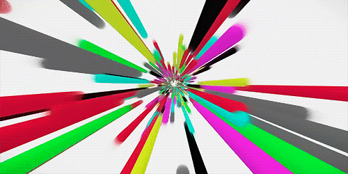

Sword Art Online (SAO)
Plot
This manga/anime series takes place in Aincrad, a virtual world in which 10,000 players are trapped. To escape, they must beat 100 floors full of enemies and obstacles.
The Fastest Swordman
Isekai is a Japanese genre that describes stories in which individuals are transported to a different world to accomplish a certain goal.
It has become a common resouce in these stories that the main protagonist(s) become extremely powerful, often to absurd levels that people consider "overpowered" in the alternate reality. However, there is always some explanation for why this happens.
This manga/anime series takes place in Aincrad, a virtual world in which 10,000 players are trapped. To escape, they must beat 100 floors full of enemies and obstacles.